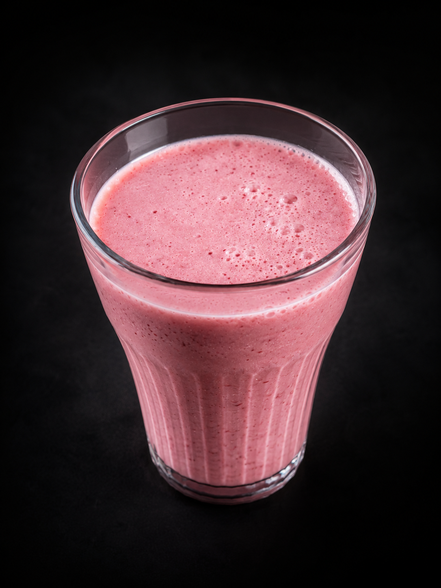

Smoothie protéiné coupe faim

Ingrédients
- 1 scoop de whey vanille
- 1/2 concombre (≈175 g)
- 50 g de framboises
- 100 g de skyr 0%
- 200 ml d'eau
- Feuilles de menthe
Préparation
- Mettre tous les ingrédients dans un blender.
- Mixer jusqu'à obtenir une texture lisse et homogène.
- Verser dans un grand verre ou une gourde.
- Boire bien frais.
Valeurs nutritionnelles (approx.)
Par portion : 205 kcal • 36 g protéines • 1 g lipides • 10 g glucides • 5 g fibres